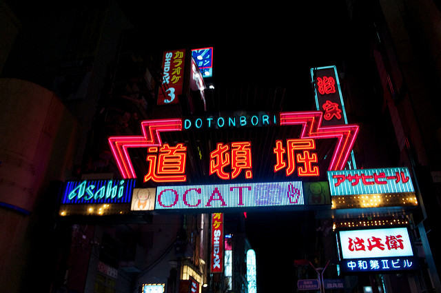

大阪海遊館 (大阪)
電玩酒吧太空站 (大阪)
淺草寺 (東京)

道頓堀，是在大阪地區，沿著道頓堀運河所發展出，主要為娛樂、飲食和購物的一個地區。最知名的景點就是固力果跑步人(Glico）的看板！
TripAdvisor 評價：
"在大阪這邊，觀光客的陷阱還真不少；所以在這裡就務必只做當地人以及觀光客會做的事，那就是只去道頓堀就好了。基本上我們是白天的時候去，只是逛街或只到特定的目的地。當然，在這個地區有許多小酒吧和餐廳，特別是在夜晚更加熱鬧。所以您可以在白天的時間在一樓的咖啡廳喝咖啡聽音樂，去逛逛一般的書店，翻翻書本、翻翻雜誌，或逛逛服飾店。" - 來自澳洲的 MelbourneMeg_12